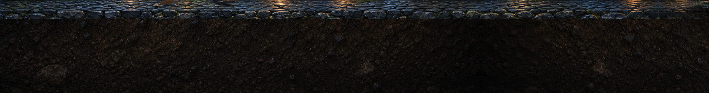

UNDERSTAR · real surface assets · review only
Background alive. Ground still.
Three restrained Seedance Mini backgrounds, now camera-locked and closed into slow 18-second forward cycles. The production floor and earth remain a separate static layer.
Animated background only

Static game floor + ground02
0.018.0s
Loading background loop…
Three surface backgrounds
Choose the amount of life
Keys 1–3 switch candidates. “Test the seam” jumps to the last 2.5 seconds so the endless wrap can be judged quickly.
- Loop length
- 18.0 seconds
- Measured scene drift
- 0.0 px
- Encoded wrap delta
- —
- Playback direction
- Forward only · no ping-pong